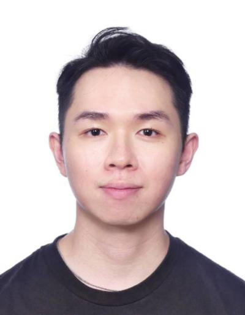

An experienced automation developer and process analyst with a keen interest in UI/UX design, I am passionate in creating efficient solutions and intuitive user experiences.
About me

Skills & tools
Apart from developing automated solutions, I also have a personal interest in exploring the world of UI/UX design during my free time.
I am fluent in HTML/CSS and am currently exploring the interesting world of p5.js.
My goal is to combine my technical skills with my passion for design to create user-friendly interfaces that are both functional and visually appealing.